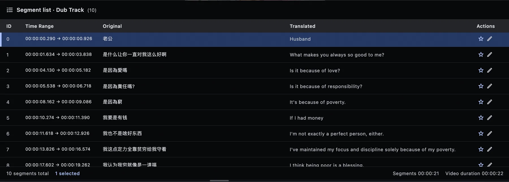
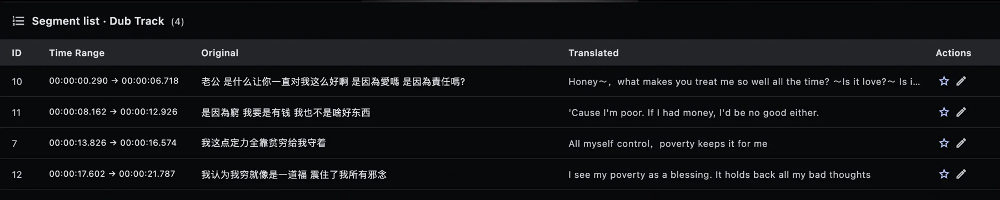
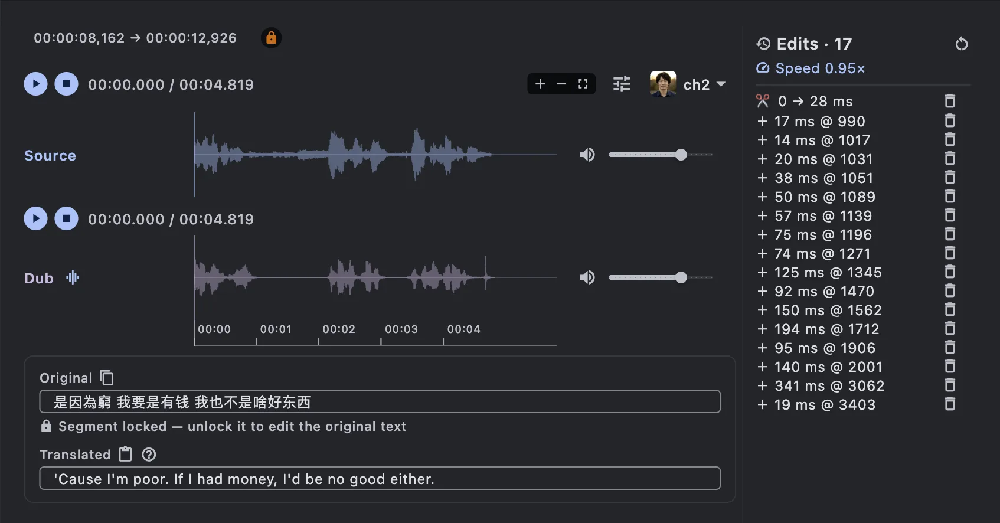
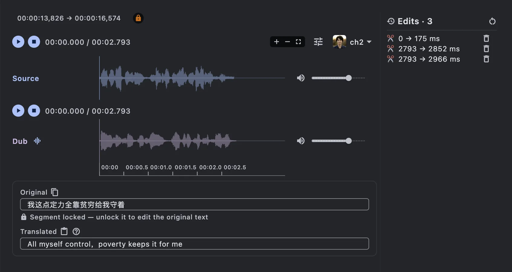

Result
The same 22 seconds in two states: the original, and the English dub.
The clips on this page are compressed for the web at the same resolution (1280 × 720).
Dubbing is not muting the original: the source is split into vocals and background
first, and only the vocals are replaced — see step 2.
How it was made
Six steps: tidy the AI segments, separate the vocals, rewrite the script, dub and align the waveforms, build the subtitle track, export.
1
Tidy the segments
The analysis splits on speech, so lines come out long or short. Trim and merge them into complete lines — without moving the timing.
2
Separate the vocals
Split the source into a vocal track and a background track; the dub replaces the vocals only.
3
Rewrite for dubbing
Short sentences, contractions, and a line that can be spoken in the same time slot matter more than a literal translation.
4
Dub and align
Speed, delete-silence and insert-silence pull the dub's waveform onto the source's.
5
Clone the subtitles
Copy the dub track into a subtitle track, then re-split it for evenly sized caption lines.
6
Export
Pick the subtitle track in the export window and burn the bilingual captions into the video.
1 · Tidy the segments: put the fragments back into whole lines
The AI splits on speech. Fast delivery and short sentences produce fragments; background voices or effects can glue two lines together. So the first step is not dubbing — it is turning the segments into “one segment = one complete line”.
- Merge fragments: “Husband”, “Is it because of love?”, “Is it because of duty?” each got their own segment; merge them back into one line.
- Trim the leftovers: use trim to cut the silence and breath at the head and tail of a segment.
- The timing is already right: segment boundaries come from the analysis and line up with the picture. Sliding a whole segment breaks lip-sync, so cut and merge inside the original boundaries — never drag.
- Unlock first: segments are locked by default (the lock icon next to the track). Unlock before you trim, split, merge or move anything.




2 · Separate the vocals: keep the background, replace the voice
Dropping a dub on top of the original would take the ambience, music and effects with it — the result sounds like someone reading in a studio. Run vocal separation on the source track first: it becomes two tracks, vocals and background. The dub replaces the vocals; the background track stays for the final mix.
Useful afterwards too: mute the vocal track and use it as a mouth reference;
the background track is what keeps the finished scene sounding like a real place.
3 · Rewrite the translation: it has to be speakable before it can fit the mouth
A subtitle translation only has to read well; a dubbing script has to finish in time and land on the mouth. English usually runs longer than Chinese, so the goal is not word-for-word correspondence but saying the same thing inside the original time slot: shorter sentences, contractions, spoken register.
These are the four final lines (Chinese original → English dub script):
| # | Chinese original | English dub script |
|---|---|---|
| 1 | 老公，是什么让你一直对我这么好啊？是因为爱吗？是因为责任吗？ | Honey~, what makes you treat me so well all the time? ~Is it love?~ Is it duty? |
| 2 | 是因為窮，我要是有钱，我也不是啥好东西 | 'Cause I'm poor. If I had money, I'd be no good either. |
| 3 | 我这点定力全靠贫穷给我守着 | All myself control, poverty keeps it for me |
| 4 | 我认为我穷就像是一道福，震住了我所有邪念 | I see my poverty as a blessing. It holds back all my bad thoughts |
The reference documents are examples: scenes, relationships and tone differ, so rewrite the lines for the film in front of you instead of copying the phrasing.
Show the translation notes exchanged with DeepSeek (English)
Dubbing Script Comparison Document
Purpose: This document provides English dubbing scripts adapted for lip-sync. Short sentences and
natural rhythm are used to match the Chinese original as closely as possible, ensuring the translation
meets dubbing requirements and lip movements stay consistent.
Line 1
Chinese original: 老公，是什么让你一直对我这么好啊？是因为爱吗？是因为责任吗？
English dubbing script: Honey, what makes you treat me so well all the time? Is it love? Is it duty?
Lip-sync note: “Honey” matches “老公”; the longer middle phrase matches the continuous mouth movement
of “是什么让你一直对我这么好啊”; “Is it love?” and “Is it duty?” are short and clean for the two
question endings.
Alternative (closer to original structure, slightly longer): Honey, what makes you always be so good
to me? Is it because of love? Is it because of duty?
Line 2
Chinese original: 是因為窮 我要是有钱 我也不是啥好东西
English dubbing script: 'Cause I'm poor. If I had money, I'd be no good either.
Lip-sync note: “'Cause I'm poor” is short and matches “是因為窮”; “If I had money” matches “我要是有钱”;
“I'd be no good either” is shorter and cleaner than “I wouldn't be a good person either,” making it
easier for lip-sync.
Alternative (slower pace, longer mouth movement): It's because I'm poor. If I were rich, I'd be no good
either.
Line 3
Chinese original: 我这点定力全靠贫穷给我守着
English dubbing script: All my self-control — poverty keeps it for me.
Lip-sync note: “All my self-control” matches “我这点定力”; “poverty keeps it for me” runs continuously
and ends with “for me,” which fits the closing mouth shape of “守着.”
Alternative (longer mouth movement): Whatever self-control I have, poverty is what keeps it for me.
Line 4
Chinese original: 我认为我穷就像是一道福 震住了我所有邪念
English dubbing script: I see my poverty as a blessing. It holds back all my bad thoughts.
Lip-sync note: “I see my poverty as a blessing” matches “我认为我穷就像是一道福,” with “blessing” landing
on “一道福”; “It holds back all my bad thoughts” is short and continuous, ending cleanly on “bad
thoughts” for “邪念.”
Alternative (slower pace, longer mouth movement): I think my poverty is a blessing — it keeps all my
evil thoughts in check.
General Dubbing Notes
1. Short sentences are preferred over long complex structures to make lip-sync easier.
2. Contractions such as “I'm,” “I'd,” and “'Cause” are used to keep the rhythm natural and the mouth
movement compact.
3. Where two versions are given, the first is usually better for clean lip-sync; the alternative is
for slower pacing or longer on-screen mouth movement.
4. Meaning is kept close to the Chinese original, but wording is adjusted where a literal translation
would be too long for dubbing.
4 · Dub and align: let the dub follow the original rhythm
After the first full dub, compare its waveform with the source. Close enough? Nudge the speed. Extra silence? Delete it. Too short? Insert silence. The goal is not a pixel-perfect copy of the waveform — it is that each line rises, pauses and ends where the original does, so the mouth never drifts.
- Level: try to keep the tone and emotion; it may take a few passes.
- Speed: the coarse adjustment. Line 1 used 0.9×, line 2 0.95×, lines 3 and 4 stayed at 1.0×.
- Delete silence: remove gaps inside the line so the second half catches up.
- Insert silence: restore pauses the original has, so the dub does not run ahead.
The four shots below compare source and dub for each line; the panel on the right lists the edits made to that line.




5 · Clone a subtitle track: copy the dub track, then re-split it
The dub track's four segments are line-level — two to six seconds each — which is far too long for a single caption. Open the dub track's ⋯ menu and choose Clone subtitles: you get a display-only subtitle track, then split it by meaning into seven even lines.
The subtitle track only decides what appears on screen; it never touches the recorded dub, so re-splitting does not mean re-dubbing.
6 · Export: the caption source is the subtitle track
In the export window choose “Video” as the output, then pick the subtitle track you just built under Subtitle track (not the dub track). Set the bilingual order if needed; SRT / ASS can be exported from the same window.
The easy mistake: pick the dub track and the four long lines get burned in; pick
the subtitle track and you get the seven short ones you just built.
Locking the dub to the picture
Order matters: make the line speakable, adjust speed, and only then touch silence.
- Rewrite first: if the sentence is too long or too written, no speed setting will fix it.
- Speed is coarse: nudge between 0.9× and 1.0×; do not use it to cram a long line, the voice changes.
- Delete silence: removing gaps inside the line is what lets the dub keep up.
- Insert silence: add a short pause where the source has one, so the dub does not jump ahead.
- Listen per line: the waveform is a guide; the ear decides. Then listen to the whole take again.
- Never move the segments: alignment happens inside the dub track; the segment timing stays put.
Good enough: on the same shot, the rises and falls of source and dub roughly
coincide, and playback does not feel a beat ahead or behind.
Show the dubbing notes (original project notes)
Dubbing:
1. Try to keep the tone and emotion of the dub; it may take several passes to get it right.
2. Keep the dubbed waveform as close to the source as possible; deleting silence and inserting silence
are the two moves that get you there.
Where this works
Anywhere you have the original voices and the picture: change the language, keep the performance and the room.
Short dramas / edits
Talking heads & interviews
Courses & lectures
Product demos
Cross-border shops
Ads & promos
Documentary clips
One rule: segments decide how long a line is, the script decides whether it can be
spoken in that time, and waveform alignment decides whether it sounds like the same person. Keep that
order.